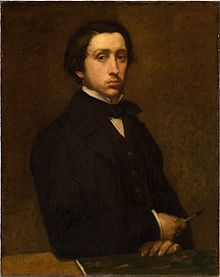
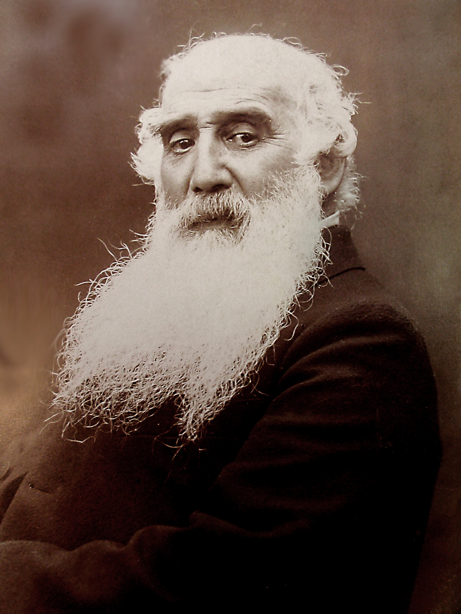
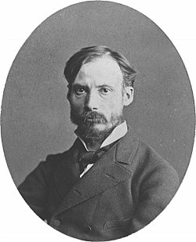

印象畫派介紹
印象派是19世紀末至20世紀初的一個藝術運動，起源於法國。該運動的藝術家們致力於捕捉瞬間的感覺和觀察到的光線效果，並將其快速、直接地呈現在畫布上。他們關注自然景色的變化、光線和色彩的效果，試圖以新的方式來表達這些感知。
印象派藝術家們打破了傳統藝術的規則和技法，放棄了嚴謹的繪畫技巧和精確的細節。他們運用明亮的色彩、快速的筆觸和光影的變化，創造出一種生動、動態的畫面。這些作品強調觀察者的個人感知和情感反應，讓觀眾能夠更深入地參與和感受藝術作品。
印象派藝術家們常常在戶外作畫，直接面對自然環境的光線和色彩變化。他們試圖通過捕捉瞬間的方式來表現不同的氛圍和情感。他們對光線效果的觀察和描繪，使他們的作品展現出細微的色彩變化和光影的模糊效果，從而呈現出一種印象或感覺。
印象派藝術家的作品常常具有明亮、清新的色彩，以及自然的動態感。他們以風景、戶外場景、人物和日常生活為主題，展示了對自然和現實世界的興趣。他們的作品在當時引起了巨大的轟動，對藝術界產生了深遠的影響。
印象派藝術家中的重要代表人物包括莫內、德加、雷諾瓦和畢沙羅等。他們的作品被廣泛收藏於世界各地的博物館和私人收藏中，成為藝術史上的經典之作。印象派藝術的革新和自由的表現方式對後世的藝術發展起到了關鍵作用，尤其對抽象藝術和現代藝術的發展產生了深遠影響
印象派藝術家介紹
-
 Claude Monet (1840-1926)
Claude Monet (1840-1926)
克洛德·莫內
《睡蓮池》
《塞納河風光》
《印象·日出》
-

Edgar Degas（1834-1917)
爱德加·竇加
《兩位舞者》
《粉紅舞者》
《舞蹈課》
-

Camille Pissarro (1830-1903)
卡米耶·畢沙羅
《戴草帽的農家女》
《沐浴者》
《倫敦水晶宮》
-

Pierre-Auguste Renoir (1841-1919)
皮耶·奧古斯特·雷諾瓦
《煎餅磨坊的舞會》
《船上的午宴》
《彈鋼琴的少女》